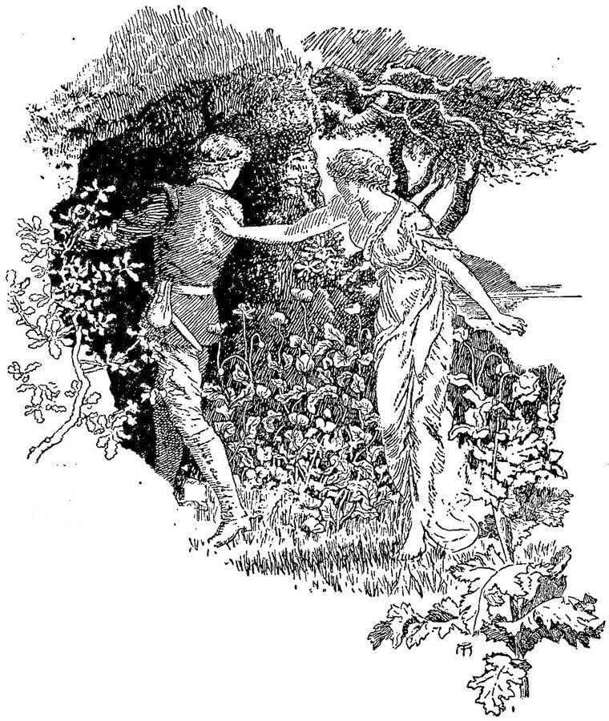
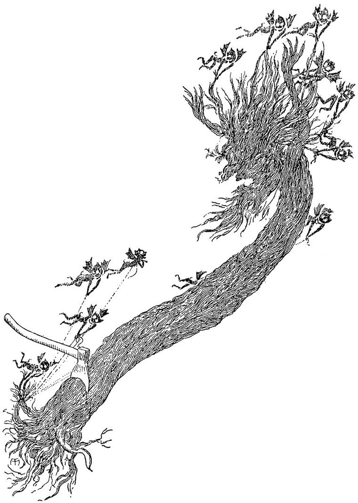
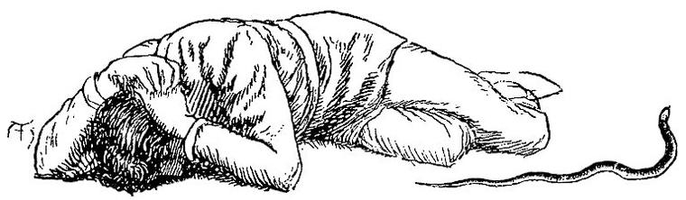

“Ah, let a man beware, when his wishes, fulfilled, rain down upon him, and his happiness is unbounded.” —FOUQUÉ, Der Zauberring.
Travel over my cheek.”
—MOTHERWELL.
But as I crossed the space between the foot of the hill and the forest, a vision of another kind delayed my steps. Through an opening to the westward flowed, like a stream, the rays of the setting sun, and overflowed with a ruddy splendour the open space where I was. And riding as it were down this stream towards me, came a horseman in what appeared red armour. From frontlet to tail, the horse likewise shone red in the sunset. I felt as if I must have seen the knight before; but as he drew near, I could recall no feature of his countenance. Ere he came up to me, however, I remembered the legend of Sir Percival in the rusty armour, which I had left unfinished in the old book in the cottage: it was of Sir Percival that he reminded me. And no wonder; for when he came close up to me, I saw that, from crest to heel, the whole surface of his armour was covered with a light rust. The golden spurs shone, but the iron greaves glowed in the sunlight. The morning star, which hung from his wrist, glittered and glowed with its silver and bronze. His whole appearance was terrible; but his face did not answer to this appearance. It was sad, even to gloominess; and something of shame seemed to cover it. Yet it was noble and high, though thus beclouded; and the form looked lofty, although the head drooped, and the whole frame was bowed as with an inward grief. The horse seemed to share in his master’s dejection, and walked spiritless and slow. I noticed, too, that the white plume on his helmet was discoloured and drooping. “He has fallen in a joust with spears,” I said to myself; “yet it becomes not a noble knight to be conquered in spirit because his body hath fallen.” He appeared not to observe me, for he was riding past without looking up, and started into a warlike attitude the moment the first sound of my voice reached him. Then a flush, as of shame, covered all of his face that the lifted beaver disclosed. He returned my greeting with distant courtesy, and passed on. But suddenly, he reined up, sat a moment still, and then turning his horse, rode back to where I stood looking after him.
“I am ashamed,” he said, “to appear a knight, and in such a guise; but it behoves me to tell you to take warning from me, lest the same evil, in his kind, overtake the singer that has befallen the knight. Hast thou ever read the story of Sir Percival and the”—(here he shuddered, that his armour rang)—“Maiden of the Alder-tree?”
“In part, I have,” said I; “for yesterday, at the entrance of this forest, I found in a cottage the volume wherein it is recorded.”
“Then take heed,” he rejoined; “for, see my armour—I put it off; and as it befell to him, so has it befallen to me. I that was proud am humble now. Yet is she terribly beautiful—beware. Never,” he added, raising his head, “shall this armour be furbished, but by the blows of knightly encounter, until the last speck has disappeared from every spot where the battle-axe and sword of evil-doers, or noble foes, might fall; when I shall again lift my head, and say to my squire, ‘Do thy duty once more, and make this armour shine.’”
Before I could inquire further, he had struck spurs into his horse and galloped away, shrouded from my voice in the noise of his armour. For I called after him, anxious to know more about this fearful enchantress; but in vain—he heard me not. “Yet,” I said to myself, “I have now been often warned; surely I shall be well on my guard; and I am fully resolved I shall not be ensnared by any beauty, however beautiful. Doubtless, some one man may escape, and I shall be he.” So I went on into the wood, still hoping to find, in some one of its mysterious recesses, my lost lady of the marble. The sunny afternoon died into the loveliest twilight. Great bats began to flit about with their own noiseless flight, seemingly purposeless, because its objects are unseen. The monotonous music of the owl issued from all unexpected quarters in the half-darkness around me. The glow-worm was alight here and there, burning out into the great universe. The night-hawk heightened all the harmony and stillness with his oft-recurring, discordant jar. Numberless unknown sounds came out of the unknown dusk; but all were of twilight-kind, oppressing the heart as with a condensed atmosphere of dreamy undefined love and longing. The odours of night arose, and bathed me in that luxurious mournfulness peculiar to them, as if the plants whence they floated had been watered with bygone tears. Earth drew me towards her bosom; I felt as if I could fall down and kiss her. I forgot I was in Fairy Land, and seemed to be walking in a perfect night of our own old nursing earth. Great stems rose about me, uplifting a thick multitudinous roof above me of branches, and twigs, and leaves—the bird and insect world uplifted over mine, with its own landscapes, its own thickets, and paths, and glades, and dwellings; its own bird-ways and insect-delights. Great boughs crossed my path; great roots based the tree-columns, and mightily clasped the earth, strong to lift and strong to uphold. It seemed an old, old forest, perfect in forest ways and pleasures. And when, in the midst of this ecstacy, I remembered that under some close canopy of leaves, by some giant stem, or in some mossy cave, or beside some leafy well, sat the lady of the marble, whom my songs had called forth into the outer world, waiting (might it not be?) to meet and thank her deliverer in a twilight which would veil her confusion, the whole night became one dream-realm of joy, the central form of which was everywhere present, although unbeheld. Then, remembering how my songs seemed to have called her from the marble, piercing through the pearly shroud of alabaster—“Why,” thought I, “should not my voice reach her now, through the ebon night that inwraps her.” My voice burst into song so spontaneously that it seemed involuntarily.
But, echoing in me,
Vibrates all around
With a blind delight,
Till it breaks on Thee,
Queen of Night!
O’ershadowing with gloom,
Seems to cover thee
Secret, dark, love-still’d,
In a holy room
Silence-filled.
Creep up the heaven to-night;
I in darksome noon
Walking hopefully,
Seek my shrouded light—
Grope for thee!
The borders of the dark!
Through the branches glow,
From the roof above,
Star and diamond-sparks
Light for love.”
Scarcely had the last sounds floated away from the hearing of my own ears, when I heard instead a low delicious laugh near me. It was not the laugh of one who would not be heard, but the laugh of one who has just received something long and patiently desired—a laugh that ends in a low musical moan. I started, and, turning sideways, saw a dim white figure seated beside an intertwining thicket of smaller trees and underwood.
“It is my white lady!” I said, and flung myself on the ground beside her; striving, through the gathering darkness, to get a glimpse of the form which had broken its marble prison at my call.
“It is your white lady!” said the sweetest voice, in reply, sending a thrill of speechless delight through a heart which all the love-charms of the preceding day and evening had been tempering for this culminating hour. Yet, if I would have confessed it, there was something either in the sound of the voice, although it seemed sweetness itself, or else in this yielding which awaited no gradation of gentle approaches, that did not vibrate harmoniously with the beat of my inward music. And likewise, when, taking her hand in mine, I drew closer to her, looking for the beauty of her face, which, indeed, I found too plenteously, a cold shiver ran through me; but “it is the marble,” I said to myself, and heeded it not.
She withdrew her hand from mine, and after that would scarce allow me to touch her. It seemed strange, after the fulness of her first greeting, that she could not trust me to come close to her. Though her words were those of a lover, she kept herself withdrawn as if a mile of space interposed between us.
“Why did you run away from me when you woke in the cave?” I said.
“Did I?” she returned. “That was very unkind of me; but I did not know better.”
“I wish I could see you. The night is very dark.”
“So it is. Come to my grotto. There is light there.”
“Have you another cave, then?”
“Come and see.”
But she did not move until I rose first, and then she was on her feet before I could offer my hand to help her. She came close to my side, and conducted me through the wood. But once or twice, when, involuntarily almost, I was about to put my arm around her as we walked on through the warm gloom, she sprang away several paces, always keeping her face full towards me, and then stood looking at me, slightly stooping, in the attitude of one who fears some half-seen enemy. It was too dark to discern the expression of her face. Then she would return and walk close beside me again, as if nothing had happened. I thought this strange; but, besides that I had almost, as I said before, given up the attempt to account for appearances in Fairy Land, I judged that it would be very unfair to expect from one who had slept so long and had been so suddenly awakened, a behaviour correspondent to what I might unreflectingly look for. I knew not what she might have been dreaming about. Besides, it was possible that, while her words were free, her sense of touch might be exquisitely delicate.
At length, after walking a long way in the woods, we arrived at another thicket, through the intertexture of which was glimmering a pale rosy light.
“Push aside the branches,” she said, “and make room for us to enter.”
I did as she told me.
“Go in,” she said; “I will follow you.”
I did as she desired, and found myself in a little cave, not very unlike the marble cave. It was festooned and draperied with all kinds of green that cling to shady rocks. In the furthest corner, half-hidden in leaves, through which it glowed, mingling lovely shadows between them, burned a bright rosy flame on a little earthen lamp. The lady glided round by the wall from behind me, still keeping her face towards me, and seated herself in the furthest corner, with her back to the lamp, which she hid completely from my view. I then saw indeed a form of perfect loveliness before me. Almost it seemed as if the light of the rose-lamp shone through her (for it could not be reflected from her); such a delicate shade of pink seemed to shadow what in itself must be a marbly whiteness of hue. I discovered afterwards, however, that there was one thing in it I did not like; which was, that the white part of the eye was tinged with the same slight roseate hue as the rest of the form. It is strange that I cannot recall her features; but they, as well as her somewhat girlish figure, left on me simply and only the impression of intense loveliness. I lay down at her feet, and gazed up into her face as I lay. She began, and told me a strange tale, which, likewise, I cannot recollect; but which, at every turn and every pause, somehow or other fixed my eyes and thoughts upon her extreme beauty; seeming always to culminate in something that had a relation, revealed or hidden, but always operative, with her own loveliness. I lay entranced. It was a tale which brings back a feeling as of snows and tempests; torrents and water-sprites; lovers parted for long, and meeting at last; with a gorgeous summer night to close up the whole. I listened till she and I were blended with the tale; till she and I were the whole history. And we had met at last in this same cave of greenery, while the summer night hung round us heavy with love, and the odours that crept through the silence from the sleeping woods were the only signs of an outer world that invaded our solitude. What followed I cannot clearly remember. The succeeding horror almost obliterated it. I woke as a grey dawn stole into the cave. The damsel had disappeared; but in the shrubbery, at the mouth of the cave, stood a strange horrible object. It looked like an open coffin set up on one end; only that the part for the head and neck was defined from the shoulder-part. In fact, it was a rough representation of the human frame, only hollow, as if made of decaying bark torn from a tree.

It had arms, which were only slightly seamed, down from the shoulder-blade by the elbow, as if the bark had healed again from the cut of a knife. But the arms moved, and the hand and the fingers were tearing asunder a long silky tress of hair. The thing turned round—it had for a face and front those of my enchantress, but now of a pale greenish hue in the light of the morning, and with dead lustreless eyes. In the horror of the moment, another fear invaded me. I put my hand to my waist, and found indeed that my girdle of beech-leaves was gone. Hair again in her hands, she was tearing it fiercely. Once more, as she turned, she laughed a low laugh, but now full of scorn and derision; and then she said, as if to a companion with whom she had been talking while I slept, “There he is; you can take him now.” I lay still, petrified with dismay and fear; for I now saw another figure beside her, which, although vague and indistinct, I yet recognised but too well. It was the Ash-tree. My beauty was the Maid of the Alder! and she was giving me, spoiled of my only availing defence, into the hands of my awful foe. The Ash bent his Gorgon-head, and entered the cave. I could not stir. He drew near me. His ghoul-eyes and his ghastly face fascinated me. He came stooping, with the hideous hand outstretched, like a beast of prey. I had given myself up to a death of unfathomable horror, when, suddenly, and just as he was on the point of seizing me, the dull, heavy blow of an axe echoed through the wood, followed by others in quick repetition. The Ash shuddered and groaned, withdrew the outstretched hand, retreated backwards to the mouth of the cave, then turned and disappeared amongst the trees. The other walking Death looked at me once, with a careless dislike on her beautifully moulded features; then, heedless any more to conceal her hollow deformity, turned her frightful back and likewise vanished amid the green obscurity without. I lay and wept. The Maid of the Alder-tree had befooled me—nearly slain me—in spite of all the warnings I had received from those who knew my danger.

